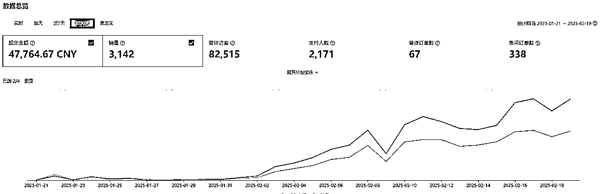
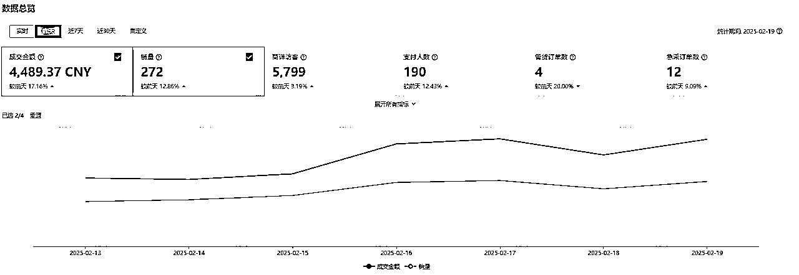
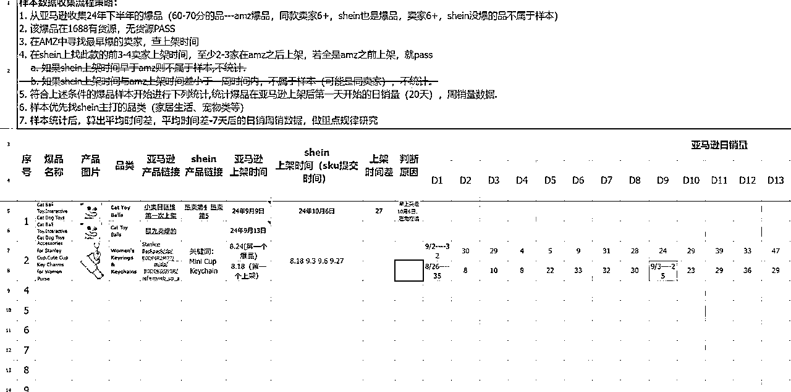
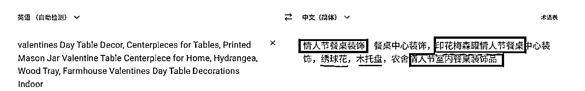
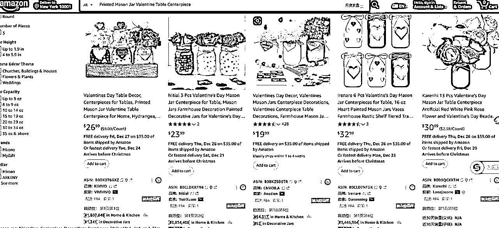
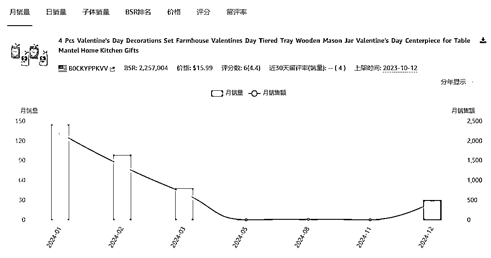
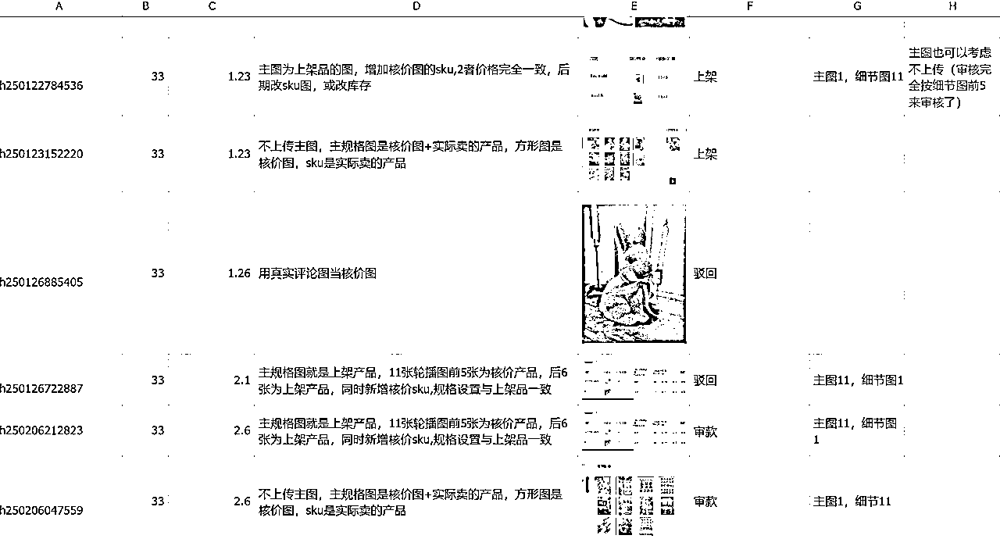

来源：https://las1d27yuu.feishu.cn/docx/NcSJd1HH8oy9nixfTboc8S9Anve
Hello 大家好，我是老横，很高兴和大家进行复盘分享Shein大航海。个人之前主要做跨境营销这一块，在跨境领域有不少经验和积累，也有幸参与到这次的大航海中。
先说成绩，在Shein的长期航海中（已持续2个月），成为了组长，有三个组员~拥有了自己的店铺，最终拿到了月GMV45000+。

近1个月的GMV

日GMV
在12月的生产航海中，我们这条Shein船的船票可以说是非常抢手，一轮二轮层层筛选，所有上船的学员也都是团队精心挑选出来比较适合做这个跨境电商领域的。
在这里要非常感谢@沈小善给了我们这样的机会和挑战
我们船长小善在开幕宣讲时，给我们讲了她对这个Shein项目以及之后整个跨境的方向和打算。Shein只是我们的第一个阶段大家需要一起攻克的，之后还有更多的Temu，TK等等平台，以及还有更广阔的自研改品直接在海外红海市场竞争。大家都信心满满开始了Shein的探索之旅
星辰大海之前还是先得脚踏实地一步一步来。
我们上船后的航行的第一航行点主要是2个内容，在规定的时间内完成选品和上架。
选品：我们的主要方向是”搬运“，其实也是目前跨境电商领域主流的玩法。我们在Temu，亚马逊上找符合要求的商品，搬运到shein上的店铺去上架。
符合要求主要有几个考量方向
等等
上架：主要是进行图片的PS，美化，和爆款标题的复制
团队老师根据我们的选品进行打分，满足要求的可以上架
看似比较简单的工作，但是光选一个品基本上就至少要用掉1个多小时，因为不知道从何入手，怎么去选。所以明白了为什么航海前规定每天必须要4个小时以上的空闲时间，因为不花费时间下去，可能连作业都写不完。
第一个航行节点是为期一周，差不多3天不到，我顺利的完成目标进入到了第2阶段
此时整个航行队伍分成了两条线
一条线是没完成节点目标的继续选品和上架
另一条线是开始进阶选品和精品上架，因为我们不是做铺货模式， 所以目标是每一个上架的品都是有爆的可能，以及尽量各方面的细节优化，让自己的商品排在搜索页前列。于是这条航线的同学们就开始了进阶学习。
于此同时船长公布了一则通知：为了高效率的工作，以及扩大规模去发展团队。希望船员们能够在选品的同时找到一些潜在的规律，但是这个规律需要测试，只要符合逻辑，船长认可，就可以进行特殊任务。验证成功之后就能成为组长带组员去执行。
在特殊任务公布的之后，我就开始了研究，
在经过一些品的研究之后，我发现监控亚马逊新品变爆品的历史趋势，当销量累积到满足某一个特定的阈值平均值时，可以立即在Shein上架（也就是比同行搬运时间更早）

经过小善的逻辑分析之后，认为这个规律可以进行测试，接下来我、小善、志愿者李煊三个人就开始了密集的验证工作，整4,5天除了吃饭睡觉就是在搞研究了。
最后的结果是，虽然规律有可行性，但是存在着监控数据庞大，可大量上的品少。
但是我没有气馁，开始研究了第二条规律（也是我认为适合个人去找，不一定需要监控可以执行），往季节性的品的方向去靠。

上图是某一个品的标题，有很多细分的小标题
情人节（季节性大词）+装饰（品类词）+桌面/窗台/餐桌/卧室....（细分关键词），
顺序颠倒组合没有关系
我们就把它叫做细分关键词词组标题吧，然后我们提取其中的一个词组标题
Printed Mason Jar Valentine Table Centerpiece
印花梅森罐情人节餐桌中心装饰

确认这个词所属的品类是属于情人节季节性的品，从首页里找一个去年、前年的品（品的标题里不要有圣诞），看它的历史销售数据。如果数据符合季节性产品曲线，我们开始找品。

新品（近1-2个月）：
B. 在关键词输入后的首页找新品，新品检查是否老款新上，如果是老款新上，确认老款的历史销量数据，高峰月销量>1000，放入筛选库
C. 在关键词输入后的首页找新品，新品检查不是老款新上，纯新品，若开始有日销量，并有逐步上升趋势，放入筛选库
在第二条规律发现之后，通过了验证。准备开始接纳组员进行小组批量商品工作了，这个时候我拥有了自己的小组，也拥有了自己店铺。
这里插播一下正常航线的进展，因为我的大量时间都用在了找规律，除了日常的直播课之外，没有过多精力去做航海中的一些事。
团队给我们航海学员开了几个店铺共享上架使用，从整体数据来看，还是存在不少的问题，相信有的学员与之前的预期有了些差距
| 预期 | 现实 |
|---|---|
| 上架就能卖 | 很多品上架了没有出单 |
| 选品，上品比较简单 | 花费的时间精力比较久 |
| 商品能卖比较高 | 核价之后，利润比较低30%以下 |
| 回款周期快 | 回款周期较长 |
造成这些问题的原因，我们总结了一下，主要原因有这些
回到研究小组，整个大团队下一共有了6个像我这样的小组，开始了前两批小组成员招募。在日常航海中符合时间宽裕，航海积分达标的3位同学进入我的小组。
原本我们的打算沿着第二条规律开始选品上品，这个时候因为年底了很多工厂快放假了，所以自己选的品得囤货，shein来了急采单不发，迟发，罚款非常严重。
小善及团队老师让我们这些小组统一上斋月节的品，这些品在斋月节会进行备货。春节前余下的2周多的时间，都在不间断的上品、上品、重复上品。
当然了，喜欢找规律，研究方法论的我，在个人认为shein操作第二大难点核价的方面开始了研究。
把日常航线中的核价称作为1.0版本，那现在我们小组已经测试验证到了3.0,4.0版本。这里也要感谢下我的组员，张张同学，与我一同进行测试。

因为我们的店是新店，在刚开始的几周时间，我们的销量只有零星几单，在淘宝发布商品马上就可以让消费者看到，可以说是1秒，在希音这个平台，平均在6-10天才能发布成功，让消费者看到。这个也是这个平台最大的壁垒之一。时间，有谁能熬得过一个动作做了10天之后才有是否成功的反馈呢？
平台反馈时间长，再加上，上架的品不够多，恰逢国内春节放假，真正开始放量是在春节初五初六的时候，随着斋月节需求量来临，以及我们现在在铺的复活节的款不断上新，销量开始慢慢稳定在日4000GMV左右并且持续上升。
以我现在感受，我们团队在人数不变的基础上，三个人兼职时间可以在两个月内突破日销破10000。
这里给大家写几条我做希音之前和之后对这个平台认知的反差
昨天我们星辰大海合伙人群内公投了我们团队的价值观，场景是要能在前行过程产生疲惫感的时候，提到这句话就给我们力量。
这句以100%的投票率成为我们的提示词，我们团队约定，累的时候就讲这句暗号互相鼓励。
我很喜欢，分享给大家~
纵有疾风起，日行三公里
最后非常感谢生财组织的大航海，大家踊跃报名，找到大家适合自己的那个项目！